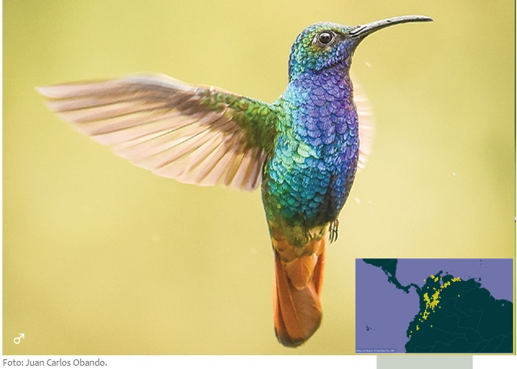

Biota and ecosystems represent a form of wealth, biological wealth. Thus, the variety of genes, species, communities, ecosystems and landscapes make up the earth's biodiversity, which sustains human life and its economic activities. For several decades, economic development has been one of the causes of the deterioration of the planet, with the consequent loss of biological diversity. The resources obtained from the exploitation of forests, seas, cultivated land, wildlife and the extraction of active ingredients of medicines, among others, have been fundamental in the construction of today's world. It is only very recently that we have become aware of the importance of the services provided by biodiversity in relation to the regulation of climate, water, soils, nutrients, biogeochemical cycles, pest control, pollination processes, etc. Hence, it has been necessary to analyze the problems and make proposals on the economic value of biodiversity, which will undoubtedly be fundamental inputs for decision-making in the international market and nature conservation.
Currently, biodiversity has been given an economic value from various perspectives (Cox, 2000; Primack et al., 2001; Groom et al., 2006); in principle, this value was divided into two main groups, the intrinsic or inherent and the instrumental or utilitarian. Utilitarian value can be attributed to the provision of goods, services, information and psycho-spiritual benefits. Read more Here
Source: Meléndez Ramirez V. Valor económico de la biodiversidad. Biodiversidad y desarrollo humano en Yucatán.

Source: Gobernación de Cundinamarca. Colibríes de Cundinamarca. Colombia. 2018.
Species: Campilopterus falcatus (Swainson, 1821)
Nombre comun: Ala de sable violeta
Vernacular name: Lazuline sabrewing
在中文: 棕尾刀翅蜂鸟
pinyin: Zōng wěi dāo chì fēngniǎo
GBIF - Global Biodiversity Information System
The Global Biodiversity Information System (GBIF) is an international network and data infrastructure funded by the world's governments to give anyone, anywhere, open access to data on all forms of life on earth.
STEM+
This educational approach, which corresponds to Science, Technology, Engineer and Mathematics, contributes to overcome the curricular fragmentation between the already named areas of technology, science, engineering and mathematics, together with the other areas and from the instrumental conditions that allow children and young people such as STEM+H from human rights. Based on interactive learning approach promotes interdisciplinary construction in real contexts, through the realization of projects and problem solving, through the realization of the following steps (Santillán, 2019): 1. Diagnosis and recognition of the initial situation or problem, 2. Identification of goals, 3. Action plan to achieve the goals, 4. Interdisciplinary implementation to improve the diagnosed situation, and 5. Evaluation of the level of achievement reached in the Project.
Software programming as a strategy for the development of computational thinking.
Programming is a form of expression and a strategy that allows shaping ideas (Sanchez Vera & Gonzales - Martinez, 2019), which pedagogically coincides with the constructivist theory that holds that the student constructs his own knowledge actively to promote meaningful learning (Tigse Parreño, 2019). See, for example, the pedagogical uses of Scratch and Code.org. In this sense, the Ministerio de Educación Nacional de Colombia proposes programming as a didactic strategy in that it contributes to closing the digital divide, improving fluency in the creation and use of technology, strengthening the capacity for calculation and logic, computational and logical-mathematical thinking (Martinez & Gómez, 2018), necessary for the solution of computer science problems, in particular and technological problems, in general.
Networks and virtual communities
Based on the implementation of collaborative and connectionist technologies in accordance with connectivist pedagogical models, focused on online learning. The pedagogical implementation of social networks, virtual learning networks and communities of practice seek to generate the active participation of children and adolescents to share experience, develop collaborative work, learn together and solve common problems.
Social networks seek to develop interactive communication skills, starting from the formation of groups to share content, experiences, carry out discussions and joint conceptual constructions or plan and develop joint activities or products. The members of these social groups assume roles such as, for example: leader in charge of general production, integrator in charge of monitoring tasks, documentary filmmaker in charge of keeping records of joint productions, and multimedia specialist in charge of media and production management, the curator or content creator. It allows various forms of collaborative work.
Virtual learning networks are based on the joint production of collaborative knowledge in formal training situations, by determining the students' prior knowledge, posing an initial challenge and guiding questions to relate prior knowledge to the knowledge to be built, the exploration of content, resources and supporting information and the development of learning activities from the negotiation of knowledge.
Communities of practice seek to solve problems that arise from common interests, generating commitment from all members of the community in the process, building joint goals and sharing languages and ways of doing things that are typical of the community. This is achieved through the development of community creation phases, their cohesion, maturation and management of activities and transformation of knowledge.
Proposed technologies: Python, PostgreSQL, QGIS 3 and Git
This proposal for training teachers and students of middle and high school in software programming content, spatial databases and geographic information systems presents to the educational community of Colombia and Latin America the programmatic use of the following technologies for the development of contents that allow you to carry out research projects in the classroom:
Python
Python is a programming language widely used in web applications, software development, data science, and machine learning (ML). Developers use Python because it is efficient and easy to learn, plus it can run on many different platforms. Python software is free to download, integrates well with all types of systems and increases development speed
Python for teachers
Python is one of the most powerful and used programming languages in mathematics, natural sciences and engineering. In general, Python permeates web development environments, scientific data, artificial intelligence, scientific computing, and numerical analysis. These reasons make learning Python a competitive advantage in the world of work and academia.
The BirdCode Project seeks to bring teachers and students of mathematics, natural sciences and bilingualism closer to the Python programming language from three points of view. The first is to generate solid foundations of the language itself, the second is to build in research spaces in the classroom numerical applications and serious games supported by spatial databases to learn natural sciences, biodiversity issues in ecosystems, mathematics and bilingualism using the language, and the third is to build collaborative learning networks with groups of students interested in technology and natural sciences topics whose results are hosted in the cloud through remote Python code development repositories, which promote collaborative work and formation of skills that contribute to classroom research on interdisciplinary topics. In this way, students can assume an active and participatory role that contributes to the construction of knowledge about biodiversity present in the territories in which they live and that exemplifies the theory of Python code development seen through the BirdCode Program. You can read more about the Python training proposal Here
PostgreSQL
PostgreSQL, commonly pronounced “Post – GRES,” is an open source database that has a strong reputation for its reliability, flexibility, and support of open technical standards. Unlike other RDMBS (relational database management systems), PostgreSQL supports both relational and non-relational data types. This makes it one of the most compatible, stable and mature relational databases currently available.
Why use PostgreSQL?
Maintaining dynamic database systems is essential in today's digital landscape, especially considering the speed at which new technologies emerge. PostgreSQL is expandable and versatile, so it can support a wide variety of specialized use cases with a powerful extension ecosystem, ranging from time series data types to geospatial analysis. Its versatile and accessible design makes PostgreSQL a “one size fits all” solution for many companies looking for cost-effective and efficient ways to improve their database management systems.